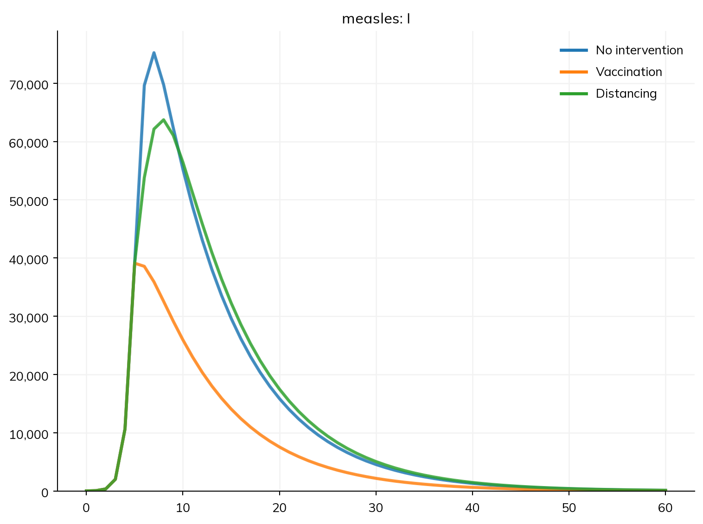
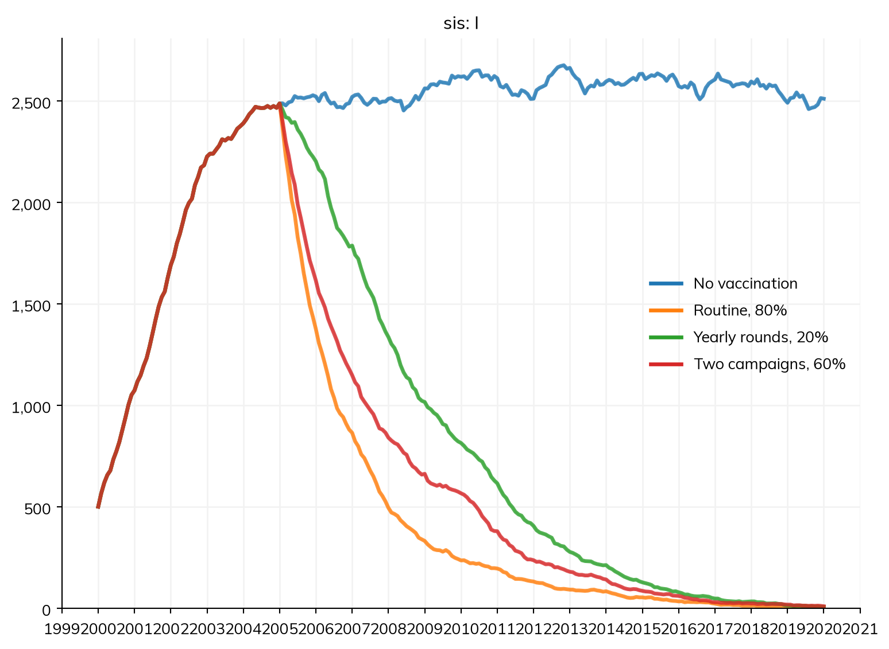
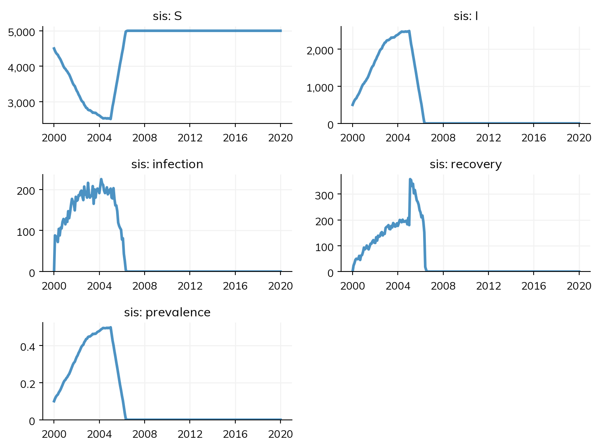
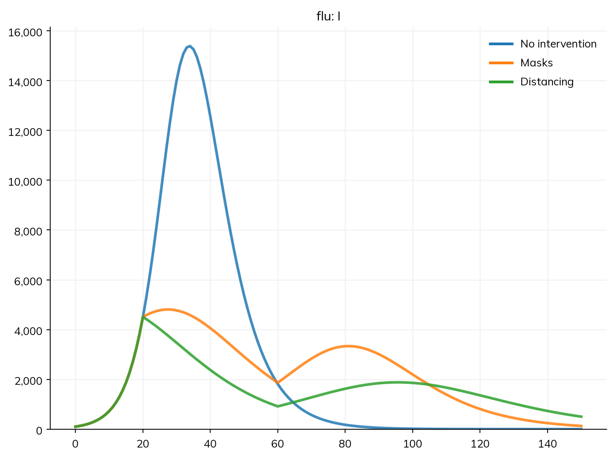
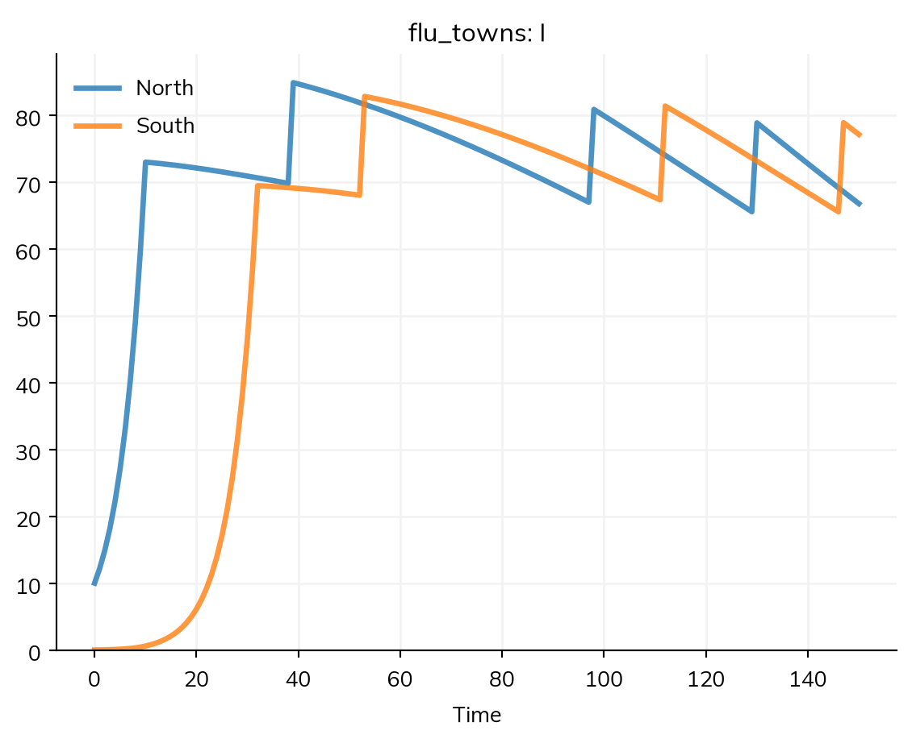
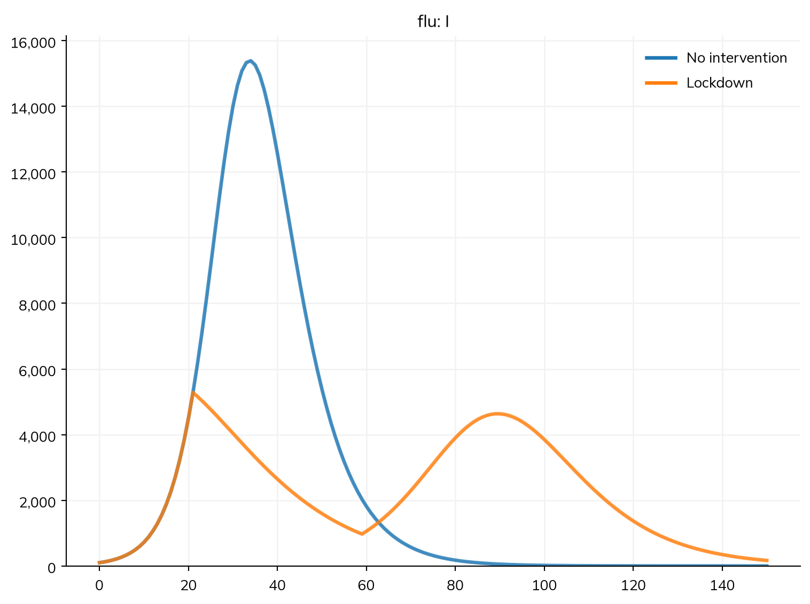

An intervention is anything done to change the course of an epidemic. Most are one of two kinds. Some deliver a product to people: a vaccine, a test, or a drug, given to the people who are eligible, at given times or when something happens to them. Others change a quantity in the model, giving nothing to anyone: masks, distancing, and school closures change transmission, faster diagnosis shortens the time people are infectious. This page covers both: how products are delivered (who, when, and how many), and how parameters are changed (when, for whom, and how changes combine), and then interventions written as code, for anything else.
What a vaccine, test, or treatment does is on Products, and what interventions cost on Costs. The same ss.modify() that changes parameters is how one module changes another, on Connectors. The tutorial T5 – Interventions and scenarios compares interventions against measles, and A4 – Interventions uses deliveries that need agents; running the scenarios of a comparison is on Scenarios.
Here are the two kinds side by side, against measles in a town of 100,000: a vaccination campaign that reaches 90% of people on day 5, and distancing that halves transmission from day 5 to day 30:
import numpy as npimport starsim as ssS, I, R = ss.states('S I R')infection = S >> I @1.9*I # β = 1.9 per dayrecovery = I >> R @ ss.days(8) # Infectious for 8 days on averagemeasles = ss.Disease(infection, recovery, init_prev=0.0001)vaccination = ss.vaccinate(efficacy=0.95, leaky=False, coverage=0.9, at=[ss.days(5)]) # Delivers a productdistancing = ss.modify(measles.pars.beta, multiply=0.5, start=ss.days(5), stop=ss.days(30)) # Changes a parameterkw =dict(total_pop=100_000, stop=ss.days(60), verbose=0)msim = ss.parallel({'No intervention': ss.Sim(measles, **kw),'Vaccination': ss.Sim(measles, interventions=vaccination, **kw),'Distancing': ss.Sim(measles, interventions=distancing, **kw),})msim.plot('measles.I')msim.summarize().loc['measles_infection']
Starsim kernels: Rust, OUT OF DATE (built before its source last changed, so results may be wrong): run "./build" in starsim/solvers/rust/

value
scenario
No intervention
99989.974541
Vaccination
51053.731226
Distancing
99963.735147
The campaign (with an all-or-nothing vaccine, leaky=False, as measles vaccine roughly is) protects those it reaches for good, and halves the number infected; by day 5, measles is already spreading fast, and many are infected before it starts. Halving transmission of a disease with an R0 of 15 hardly helps: R0 is still above 7, and when distancing ends, the people it protected are still susceptible. A disease with an R0 of 2, as in the examples below, responds very differently.
Delivering products
A delivery says who can receive the product, when, and how many. There is one delivery for each kind of product, ss.vaccinate(), ss.screen(), and ss.treat(), and each takes the product, or the product’s own keywords, as well as how it is delivered. A delivery takes its name from the variable it is assigned to, and has results of its own: the number delivered on each step, the number eligible, and the coverage reached. Its keywords are the same for every product:
Keyword
Meaning
start=, stop=
When delivery starts and stops: dates, or times in the sim’s unit
at=
Deliver in rounds at these times (a campaign)
interval=
Deliver in rounds this far apart, between start and stop
at_age=
Routine delivery to people as they reach an age, e.g. at_age=ss.months(9)
where=
Who can receive it: a condition, or a function of the sim
who=
Who receives it: an event (such as screening.positive or sis.infection), a condition, or both, joined with &
coverage=
The share of eligible people reached
capacity=
The number that can be delivered (per round, per step, or as a rate)
priority=
Who is served first when capacity runs short
queue=
Whether those not served wait their turn (agents only)
delay=
The time from a trigger to delivery (agents only)
trace=
Deliver to the contacts of those selected, on a network (agents only)
when=
Deliver only on steps where a function of the timeline returns True, e.g. lambda t: t.ti % 7 == 0
deliver=
A function of the sim that returns who receives it, instead of where=, coverage=, and the rounds
disease=
The disease the product acts on, if there is more than one
The examples in this section use a curable infection with no lasting immunity, over 20 years, as an SIS model run as agents (since some of what follows depends on each person’s own history):
S, I = ss.states('S I')infection = S >> I @ ss.peryear(2)*I # β = 2 per yearrecovery = I >> S @ ss.years(1) # Infected for a year on average, then susceptible againsis = ss.Disease(infection, recovery, init_prev=0.1)kw =dict(n_agents=5000, start=2000, stop=2020, dt=ss.months(1), verbose=0)
Rounds and routine delivery
With at= or interval=, delivery is in rounds: in each round, every eligible person is offered the product once. With neither, delivery is routine: each person is offered it once, at the first step on which they are eligible. at_age= is routine delivery as people reach an age: at_age=ss.months(9) vaccinates children as they turn 9 months old, and not everyone older on the first day.
routine = ss.vaccinate(efficacy=0.8, coverage=0.8, start='2005') # Once per person, when first eligibleyearly = ss.vaccinate(efficacy=0.8, coverage=0.2, interval=ss.years(1), start='2005') # A round every yearcampaign = ss.vaccinate(efficacy=0.8, coverage=0.6, at=['2005', '2010']) # Two roundsscenarios = {'No vaccination': ss.Sim(sis, **kw),'Routine, 80%': ss.Sim(sis, interventions=routine, **kw),'Yearly rounds, 20%': ss.Sim(sis, interventions=yearly, **kw),'Two campaigns, 60%': ss.Sim(sis, interventions=campaign, **kw),}msim = ss.parallel(scenarios)msim.plot('sis.I')

As agents, each person has an age, so at_age= can be any age. As compartments, people have only an age group, and reach an age by aging from the group below it into the one it starts, so at_age= needs age groups with an edge at that age; otherwise it is an error (it never runs the model as agents instead). To compare several ages of delivery with the same compartments, give fine age groups once, with an edge at each age to try:
S, I, R = ss.states('S I R')measles = ss.Disease(S, I, R, infection=S >> I @ ss.peryear(500)*I, recovery=I >> R @ ss.days(8), births=ss.birth(S, rate=ss.peryear(0.03)), init=dict(I=0.001, R=0.85), name='measles')measles.stratify(age=[0, 0.25, 0.5, 0.75, 1, 1.25, 1.5, 5, 15]) # Edges every 3 months up to 18 monthssims = {}for months in [6, 9, 12, 15]: mcv1 = ss.vaccinate(efficacy=0.85, coverage=0.8, at_age=ss.months(months), name='mcv1') sims[f'At {months} months'] = ss.Sim(measles, interventions=mcv1, total_pop=1e6, start=2000, stop=2005, dt=ss.weeks(1), verbose=0)msim = ss.parallel(sims)for label in sims:print(f'{label}: {msim.sims[label].results.measles.infection.sum():,.0f} infections')
At 6 months: 106,247 infections
At 9 months: 106,431 infections
At 12 months: 106,468 infections
At 15 months: 106,476 infections
Coverage and capacity
coverage=0.7 is a share of the eligible people. A typed rate or probability, such as coverage=ss.perday(0.1), is the chance of being reached over the step (or over the round, with interval=), and routine delivery then offers it at every step to those eligible: a rate of seeking care, for example. capacity= is a number available: a bare number is per round for campaigns (or per step, for delivery on events or by a function), and a rate, such as ss.peryear(500), is per unit time, which routine delivery needs. When fewer are available than people who would receive one, those who do are chosen at random, unless priority= says who comes first (e.g. priority=ss.ppl.age, the oldest first). Given together, coverage is applied first, and capacity caps the result:
limited = ss.vaccinate(efficacy=0.8, coverage=0.6, at=['2005', '2010'], capacity=500) # At most 500 doses a roundsim = ss.Sim(sis, interventions=limited, **kw)sim.run()print('Doses delivered:', sim.results.limited.delivered.sum())
Doses delivered: 1000.0
With queue=True, those not served for lack of capacity wait, longest first, until they are served or are no longer eligible; a duration, such as queue=ss.months(6), limits the wait.
Who is eligible
where= says who can receive the product. It is a condition on people or on the states of a module, written before the sim exists, such as ss.ppl.age < 15 (people under 15), sis.I (people infected), or a combination with &, |, and ~ (and, or, not). A condition is not worked out when it is written, but each time it is needed, in the sim it runs in, so the same condition works in every copy of a sim. Anything else is a function of the sim, returning a boolean array or the UIDs of people:
Children vaccinated: 1067.0
Adults vaccinated: 3408.0
Each of these deliveries makes its own vaccine. The first is named vaccine; since that name is taken, the second is named after its delivery, adults_product.
Delivery when something happens
An event in where= delivers to the people something has just happened to, instead of on a schedule: a transition (the people who went through it on this step), or the outcome of another delivery. A transition can also be given by its path, where='sis.infection'. Here half of people are treated when they are infected, up to 30 treatments a month:
A condition can also be read on someone’s mother: ss.mother(cond, born=True) holds for a person whose mother meets cond. Each event remembers, per person, whether it ever happened (.ever), how often (.count), and how long ago (.since). Here newborns are tested if their mother tested positive at antenatal care within the past year:
As agents, every delivery keeps the memory of its events (who it reached, and each outcome), so it can be read after a run: sim.interventions.screening.ever.uids is everyone ever screened, and (sim.interventions.screening.positive.since <= ss.years(1)).uids everyone positive within the past year.
trace= is contact tracing: it delivers to the contacts, on a network, of the people that the event in who= selects. A network with memory= reaches recent past partners too (see Contact networks).
Delivery by a function
When who, when, and how many depend on each other (“treat the 200 oldest people who are infected”), one function says it. It is called every step (within start and stop, if given), and returns the UIDs of the people who receive the product on that step; capacity= may still cap it:
import numpy as npdef oldest_infected(sim):""" The 200 oldest people who are infected """ infected = sim.diseases.sis.I.uids order = np.argsort(sim.people.age[infected])return infected[order[-200:]]targeted = ss.treat(cure=0.9, deliver=oldest_infected, start='2005')sim = ss.Sim(sis, interventions=targeted, **kw)sim.run()sim.plot('sis')

when= is a condition on time, a function of the timeline that returns True or False, and delivers only on steps where it is True. A function of the sim goes in where=, e.g. once prevalence passes a threshold (see below).
Changing parameters
Masks and distancing
Here is a flu-like epidemic in a town of 100,000, with β = 0.4 per day and an infectious period of 5 days (R0 = 2), and two policies: masks worn from day 20 to day 60, which cut transmission by 40%, and distancing that halves transmission from day 20 and then eases to 80% of its usual level from day 60:
import starsim as ssS, I, R = ss.states('S I R')infection = S >> I @0.4*I # β = 0.4 per dayrecovery = I >> R @ ss.days(5) # Infectious for 5 days on averageflu = ss.Disease(infection, recovery, init_prev=0.001)masks = ss.modify(flu.pars.beta, multiply=0.6, start=ss.days(20), stop=ss.days(60))distancing = ss.modify(flu.pars.beta, multiply=ss.timeseries({ss.days(20): 0.5, ss.days(60): 0.8}), start=ss.days(20))kw =dict(total_pop=100_000, stop=ss.days(150), verbose=0)scenarios = {'No intervention': ss.Sim(flu, **kw),'Masks': ss.Sim(flu, interventions=masks, **kw),'Distancing': ss.Sim(flu, interventions=distancing, **kw),}msim = ss.parallel(scenarios)msim.plot('flu.I')

flu.pars.beta is the β of the transmission, which a declared disease names beta. Masks delay the epidemic, but once they come off, most of it still happens; distancing, which never fully ends, cuts it by more:
msim.summarize().loc['flu_infection']
value
scenario
No intervention
79615.377937
Masks
65736.554255
Distancing
49626.920011
Changes at given times: ss.timeseries()
ss.modify(target, multiply=ss.timeseries({t1: x1, t2: x2}), start=t1) multiplies a quantity by each value from its time until the next; before start=, the quantity has its own value. Each multiplier is relative to the quantity’s own value, not to the one before. set= gives values instead of multipliers, and one change needs no series: ss.modify(flu.pars.beta, set=0.25, start=ss.days(20)). The times are dates in a sim with dates ('2025-03-01'), durations since the start (ss.days(20)), or numbers in the sim’s unit.
ss.modify(target, multiply=...) changes a quantity for as long as it applies: always, between start= and stop=, on the steps a condition on time says so (when=), or where a condition holds (where=), of people, of the population, or a function of the sim. It takes exactly one of:
Keyword
What it does
multiply=
Multiplies the quantity
efficacy=
Removes a share of the risk: the same as multiply=1 - efficacy, for protection such as condoms
add=
Adds to the quantity (parameters only; and an inflow from ss.null, to which it adds an amount per unit time from outside the model, e.g. ss.modify(typhoid.shedding, add=ss.perday(4e6)))
set=
Replaces the quantity (parameters only)
and any of:
Keyword
Meaning
start=, stop=
When it applies (by default, always)
where=
Who it applies to: a condition, or a function of the sim (by default, everyone)
when=
A condition on time: a function of the timeline that returns True on the steps it applies
hold=
Once where= or when= selects someone, it stays on for them for at least this long
share=
With multiply= or efficacy=, the share of acts (or contacts) it applies to, e.g. condom use in 30% of acts
route=
For a change to transmission, the network or networks it applies on (by default, all)
The amount can itself vary: multiply= takes anything a parameter takes, such as ss.seasonal() or ss.timeseries() (see Parameters).
What can be changed
The target of a modifier is any named quantity in the model:
Target
Example
What it changes
A parameter
flu.pars.beta
The parameter, for everyone it applies to
A transition
flu.recovery
The transition’s rate (or its probability, for a branch with p=)
Susceptibility or infectiousness
flu.rel_sus, flu.rel_trans
Each person’s relative chance of infection, or of infecting others (multiply only)
A network or contact layer
school, from ss.contacts('Kenya', layer=[...])
The contacts on it
Any of these by name
'flu.pars.beta', 'school.pars.n_contacts'
The same, written as a path
Here faster diagnosis from day 30 halves the time that people stay infectious, by doubling the rate of recovery, and susceptibility is halved for people aged 65 and over in an age-structured version of the model:
Closing schools is a modifier on the school layer of a contact matrix: see Population data.
Who it applies to
where= is a condition on people or on the states of modules, written before the sim exists: ss.ppl.age >= 65, flu.I, or a combination with &, |, and ~ (and, or, not), such as (ss.ppl.age >= 65) & ~flu.R. A condition is worked out each time it is needed, in the sim it runs in, so the same condition works in every copy of a sim made by ss.parallel() or by calibration. Anything else is a function of the sim, returning a boolean array or the UIDs of people: where=lambda sim: sim.people.age >= 65. A condition on a property of people, such as age, can be run as compartments only if the model is stratified by that property, as above; otherwise the model runs as agents.
Changes triggered by the epidemic
A rule such as “close schools when cases pass a threshold” is a function of the sim, given as where=, which returns True on the steps it applies. It can read any result up to the start of the step (sim.ti - 1, since this step’s results aren’t written yet). It has no memory: the modifier is on exactly when the function says so, so a bare threshold switches on and off as the epidemic crosses it. hold= adds the simplest memory: once on, it stays on for at least that long. Here transmission is halved for at least 30 days whenever more than 5,000 people are infectious:
A condition on a result can also be written with the result itself, which works out the condition for each place (or other group) on its own. Here each of two towns halves its transmission for at least 14 days once its cases over a week pass 200 per 100,000 people:
towns = ss.geo.geography(names=['North', 'South'], pop=[50_000, 50_000], x=[0, 20], y=[0, 0])S, I, R = ss.states('S I R')infection = S >> I @0.4*Irecovery = I >> R @ ss.days(5)flu_towns = ss.Disease(infection, recovery, init_n=dict(I=ss.by(patch=[10, 0])))flu_towns.stratify(patch=towns, mobility=ss.geo.gravity(away=0.001))weekly = flu_towns.infection.incidence(over=ss.days(7), by='patch') # New infections over the past week, as a share of each townlocal = ss.modify(flu_towns.pars.beta, multiply=0.5, where=weekly >200e-5, hold=ss.days(14))sim = ss.Sim(flu_towns, interventions=local, stop=ss.days(150), verbose=0)sim.run()sim.results.flu_towns.I.by('patch').plot()

Each town’s measures keep its epidemic near the threshold. Any other rule that remembers what it did (a lockdown that lasts until cases fall below a lower threshold, say) is a module written as code: a subclass of ss.Intervention whose step() decides, and an ss.modify() whose when= reads its decision, so that the base value is never overwritten. See below.
How changes combine
A modifier never overwrites the quantity it changes. The quantity keeps its own base value, and the modifiers active now are applied on top of it to give the effective value, which the model uses:
effective = (the set value, if any, otherwise the base) × every multiplier + every addition
that is, set, then multiply, then add, whatever order the modifiers were given in. Two 40% reductions give a 64% reduction (0.6 × 0.6 = 0.36), the usual assumption for independent effects; the efficacies of products (such as a vaccine’s) are multipliers of the same kind. Since the base is never changed, nothing has to be undone when a modifier stops applying, and modifiers from several sources combine instead of erasing each other. The array itself holds the base: as agents, the effective value of each person, with the modifiers and products that apply now, is dis.current_value(), e.g. sim.diseases.flu_age.current_value('rel_sus'), which is what to record or check (rel_sus itself gives the base values). sim.what_modifies() lists the modifiers on a quantity, with their conditions:
A modifier can be given to the sim as an intervention (interventions=) or as a connector (connectors=). The two do the same thing, and differ only in where they run in each step; by convention, policies go in interventions= and interactions that are part of the biology (one disease raising the risk of another) in connectors= (see Connectors).
Under compartments and agents
Changes work the same under every solver. As agents, a change to contacts (such as multiply=0.5 on a layer) means each contact happens with that probability in a step; in a compartmental run, the contacts are scaled. where= on a property of people needs either agents, or a model stratified by that property, and a model with neither runs as agents.
Writing an intervention as code
Deliveries and modifiers cover the common cases. Anything else is a module written as code: a subclass of ss.Intervention with a step() method, which runs on every step and can read and change anything in the sim (see Custom modules, and the tutorial T9 – Custom modules, which writes one for isolating measles cases).
An intervention written as code is best kept to deciding, leaving the change itself to ss.modify(), so that the base value is never overwritten and the change combines with others. Here is a lockdown with memory: it starts when more than 5,000 people are infectious, as the reactive measure above does, but is lifted only once fewer than 1,000 are. The intervention keeps the decision, and records it as a result; the modifier reads it:
class Lockdown(ss.Intervention):""" Lock down when more than `on` people are infectious, and lift it only once fewer than `off` are """def__init__(self, on=5000, off=1000, **kwargs):super().__init__()self.define_pars(on=on, off=off)self.update_pars(**kwargs)self.active =Falsereturndef init_results(self):super().init_results()self.define_results(ss.Result('active', label='Lockdown in place'))returndef step(self): infectious =self.sim.results.flu.I[self.sim.ti -1] ifself.sim.ti >0else0# As of the last stepifnotself.active and infectious >self.pars.on:self.active =Trueelifself.active and infectious <self.pars.off:self.active =Falseself.results.active[self.ti] =self.activereturnlockdown = Lockdown()effect = ss.modify(flu.pars.beta, multiply=0.5, where=lambda sim: sim.interventions.lockdown.active)msim = ss.parallel({'No intervention': ss.Sim(flu, **kw),'Lockdown': ss.Sim(flu, interventions=[lockdown, effect], **kw),})msim.plot('flu.I')print('Days of lockdown:', msim.sims[1].results.lockdown.active.sum())

Days of lockdown: 38.0
The lockdown stays in place for 38 days, until fewer than 1,000 people are infectious, rather than switching on and off around a single threshold. Once it is lifted, a second wave follows, since most people are still susceptible: the usual result of a measure that ends before immunity has built up, and a reason to run scenarios until their epidemics are over. An intervention that reads results only, as this one does, runs under every solver; one that acts on particular people (e.g. through their states) runs as agents. A product whose effect needs code is a subclass of ss.Product instead: see Products.
Comparing scenarios
An intervention’s effect is the difference between a run with it and a run without, so every comparison needs a baseline that shares everything else: the same population, parameters, and, for a stochastic model, random numbers. Make the scenarios from one sim, with sim.new(interventions=...), and run them together with ss.parallel(), as on this page. Some things to keep in mind:
Run long enough. An intervention that delays infections can look like one that prevents them if the run ends too soon; run until the epidemics of all scenarios are over, or long enough to see the endemic level.
Run more than once. For a model run as agents or as a stochastic model, the difference between two single runs is partly chance; run each scenario several times (n_runs=), with the same seeds for each, and compare the differences run by run (msim.diff()). See Scenarios.
Count the same thing. Compare the same results in the same units across scenarios: infections in people, not agents, and over the same period.
Pitfalls
Routine is once per person. Routine delivery offers each person the product once, when they are first eligible; a share of people reached every year is delivery in yearly rounds (interval=ss.years(1)), or routine delivery with a typed coverage (coverage=ss.probperyear(0.5)), a chance at every step for as long as people are eligible.
Coverage is of the eligible.coverage=0.8 with where=ss.ppl.age < 5 reaches 80% of children under 5, not 80% of everyone.
Routine delivery needs a rate of capacity. A bare number as capacity= is per round or per step; routine delivery has neither, so it needs a rate, e.g. ss.peryear(500).
and, or, and not don’t combine conditions. Use &, |, and ~, with brackets: (ss.ppl.age > 15) & ~sis.I.
A multiplier is relative to the base.ss.modify(beta, multiply=ss.timeseries({20: 0.5, 60: 0.8}), start=20) sets transmission to 80% of its base from day 60, not to 80% of the 50% before.
Susceptibility and infectiousness only multiply.add= and set= are for parameters; on rel_sus and rel_trans, use multiply=.
A trigger with no memory flickers.where= on a threshold switches the modifier on and off as the quantity crosses it; give hold= for a measure that stays in place once begun.
Read results from before this step. A function given as where= runs before the step’s results are written; read [sim.ti - 1], not [sim.ti].